ARCHIVES.
Things that did not fit
neatly elsewhere.
THE FACE OF
MANY BRANDS.
Sometimes I ended up
in the work.

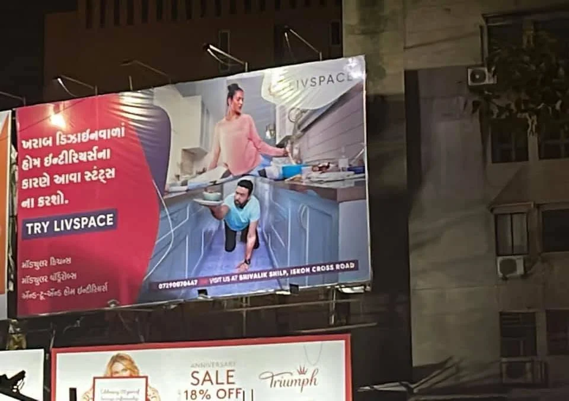

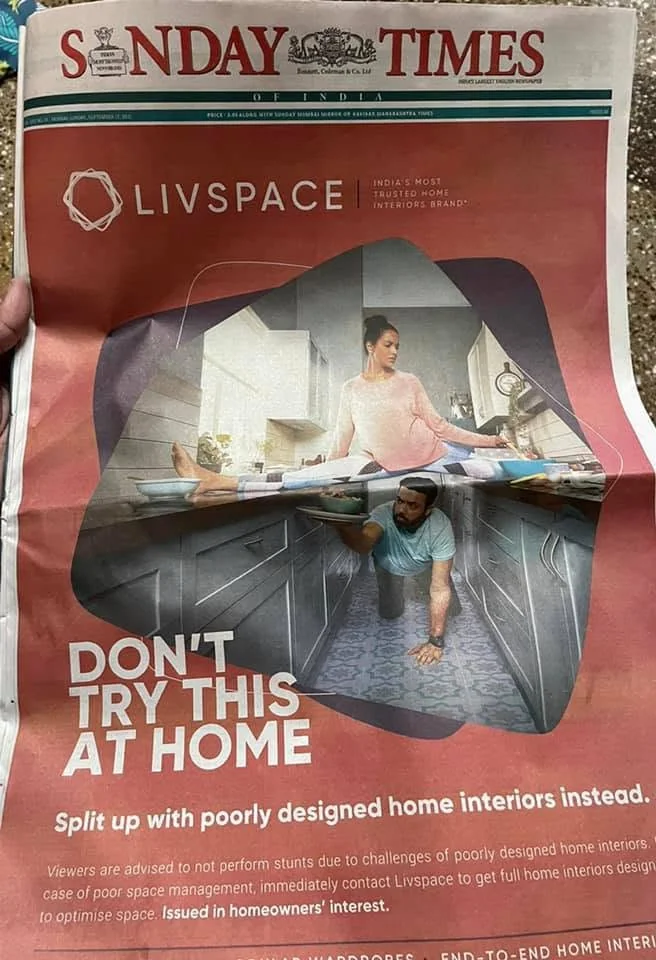

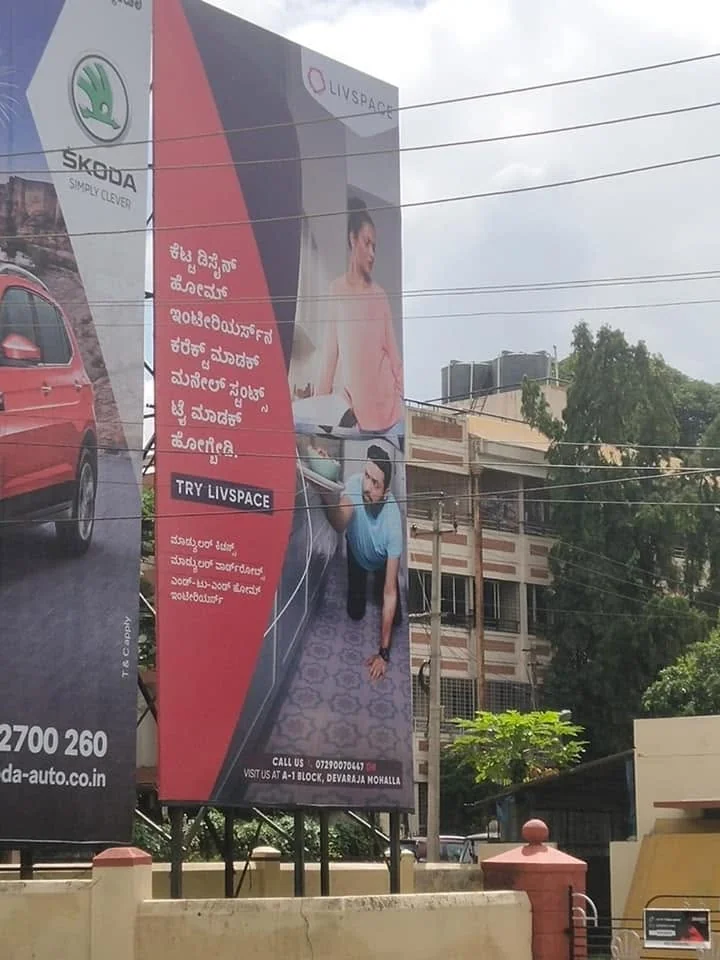

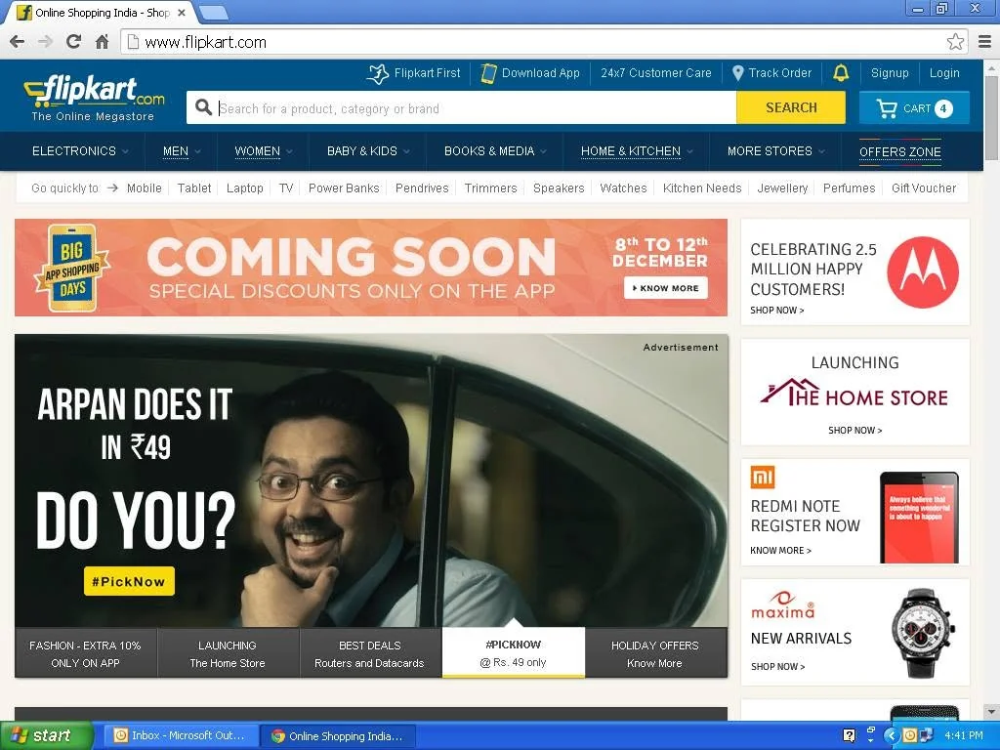

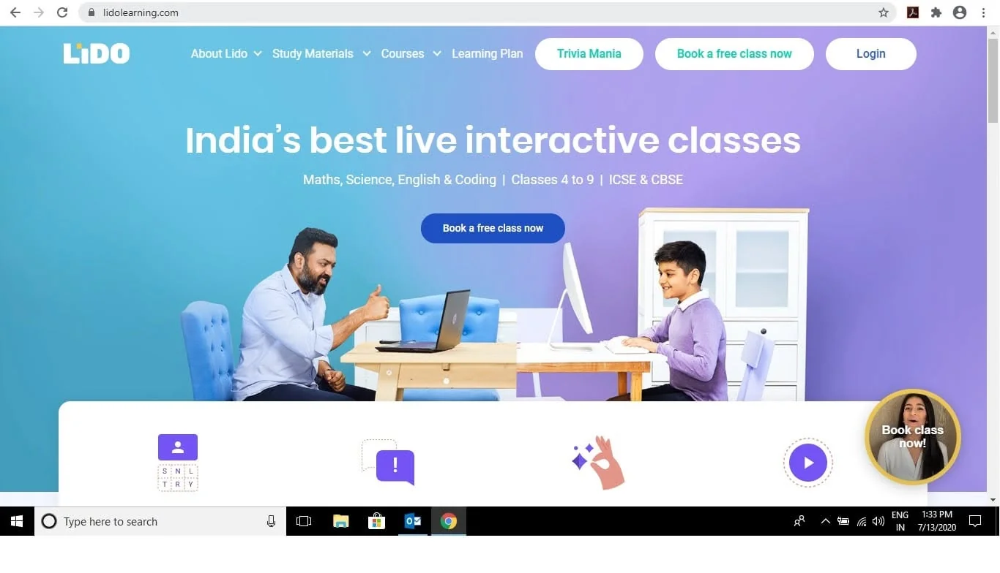

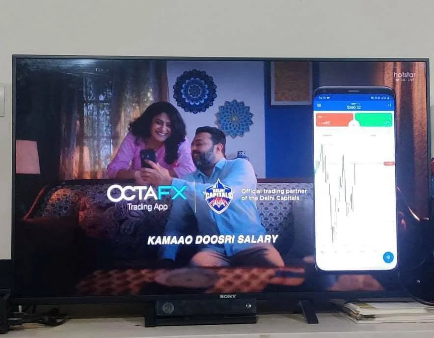

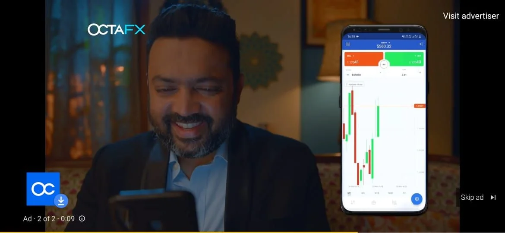
RECOGNITION.

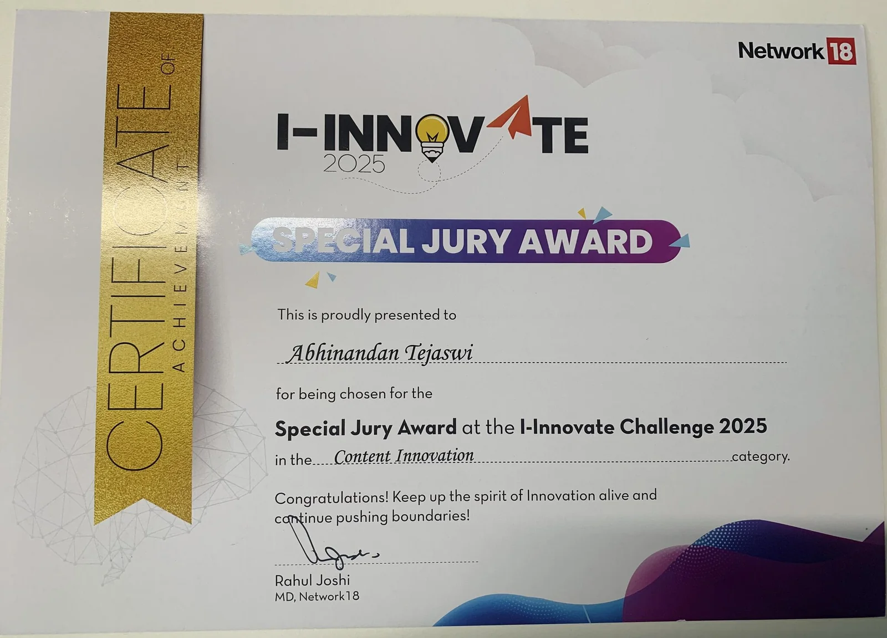
I-INNOVATE
Special Jury Award / Network18

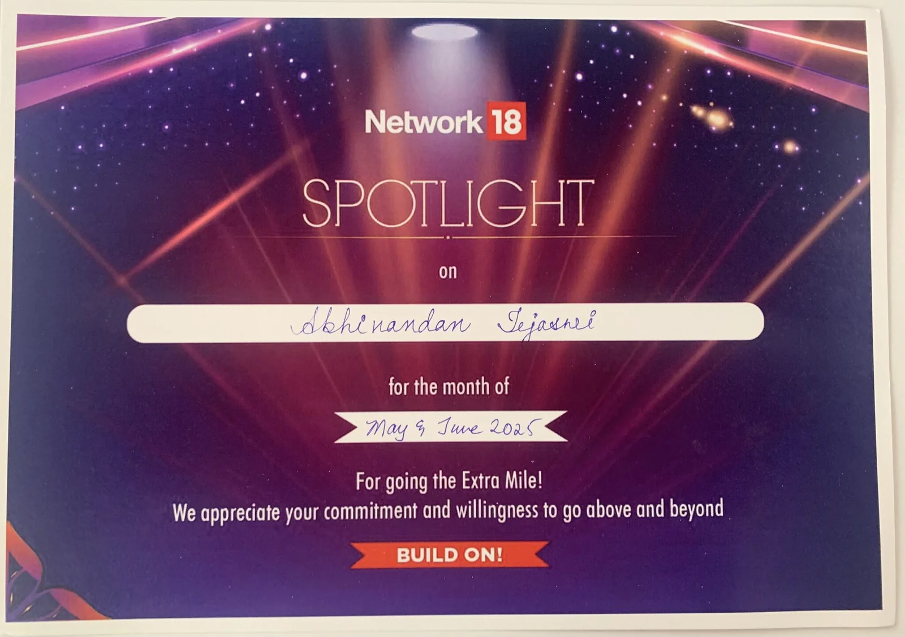
SPOTLIGHT AWARD
Network18

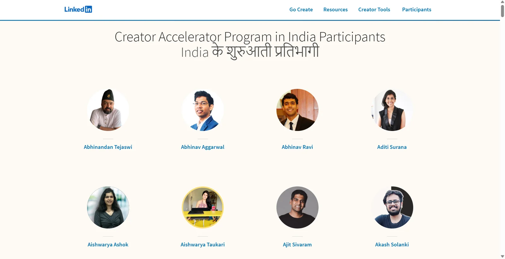
LINKEDIN INDIA
CREATOR ACCELERATOR PROGRAM
Selected participant / 100-person cohort
A FEW DIFFERENT
ROOMS.

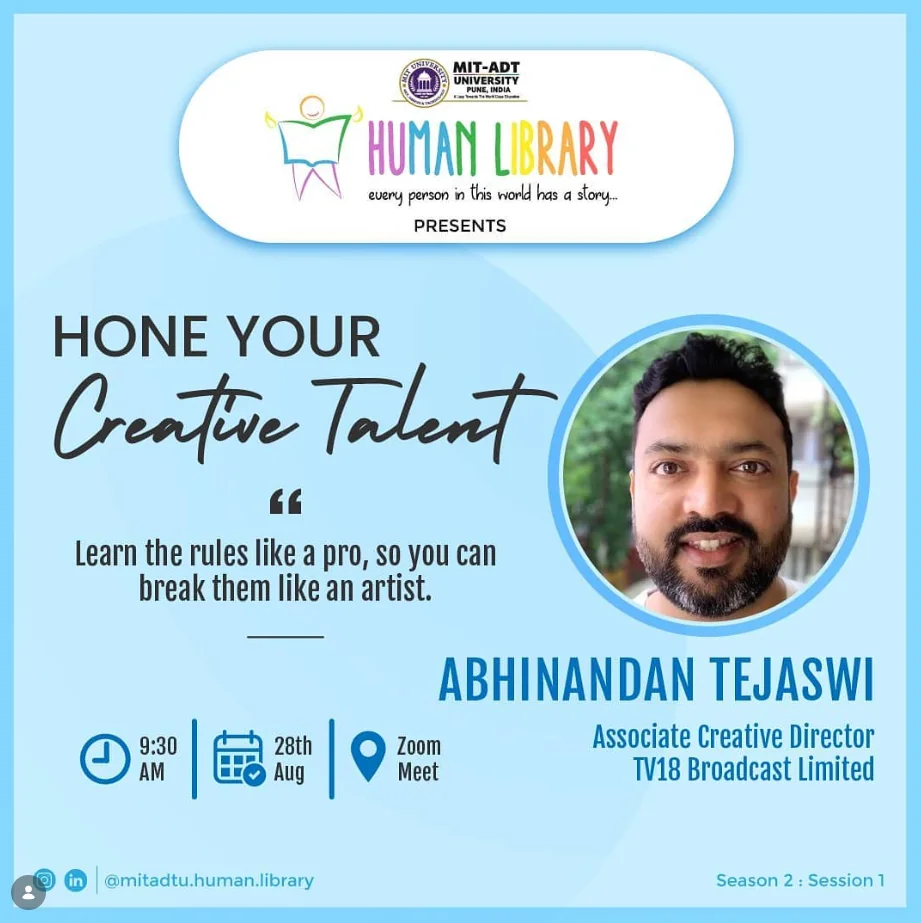
MIT-ADT
Hone Your Creative Talent

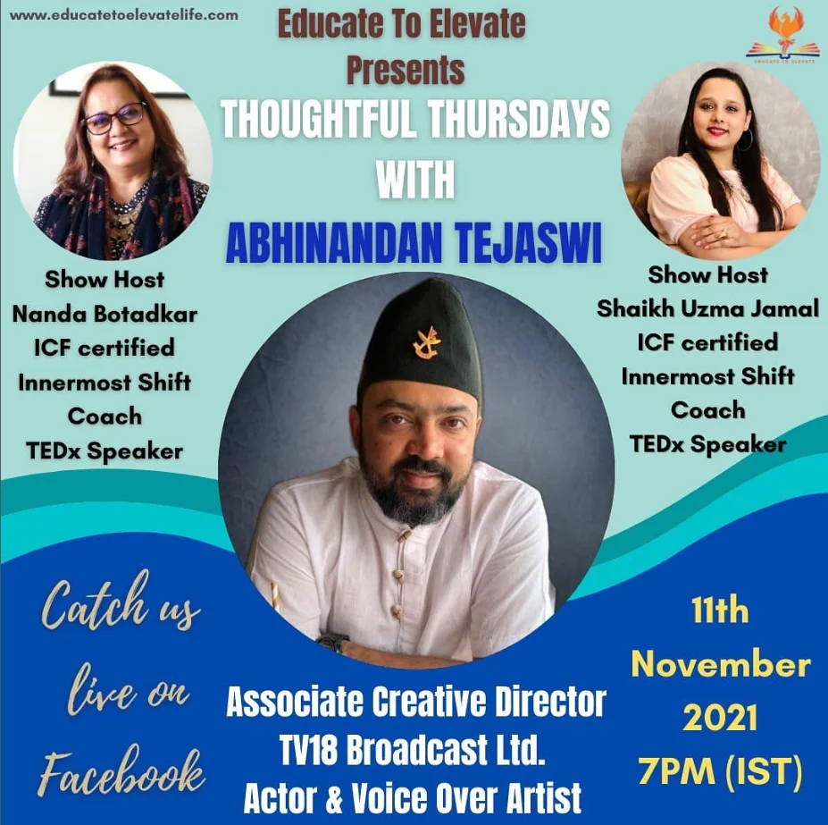
THOUGHTFUL THURSDAYS
A conversation with Educate To Elevate
OTHER
FREQUENCIES.
A different register.
TWO JINGLES
KhelPlay Rummy
Switch on CNBC-TV18

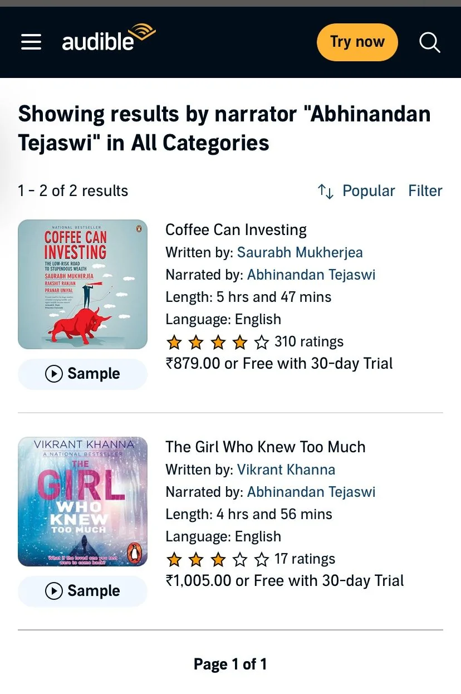
AUDIBLE
Audiobook narration

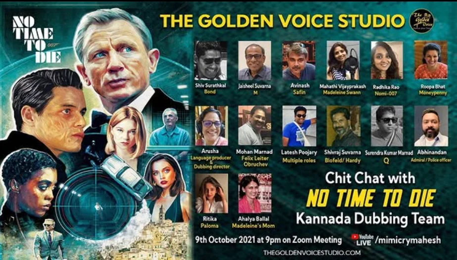
NO TIME TO DIE
(2021)
Kannada dubbing
Admiral + Cop
Honoris Causa
citation reading
Dr. D. Y. Patil Vidyapeeth, Pimpri, Pune
9th Convocation
In the presence of Shri M. Venkaiah Naidu, then Hon'ble Vice President of India.
The shorter version.
Two-page CV / PDF
OPEN TO
INTERESTING
WORK.
Consulting. Freelance projects.
Creative and AI collaborations.
Workshops and speaking engagements.
For companies, startups, SMEs,
colleges, universities and schools.